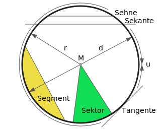

Mein kleines TafelwerkKreise
Geometrische Figuren am und im Kreis

Zeichnerische Darstellung geometrischer Figuren am und im Kreis
- Peripherie, u
- Der Umfang des Kreises, also der Kreis an sich.
- Sekante
- Eine Gerade, die die Peripherie an zwei Punkten schneidet.
- Sehne
- Eine Gerade, die die Peripherie an zwei Punkten berührt, ohne sie zu schneiden.
- Die Sehne ist der Teil der Sekante, der innerhalb des Kreise liegt.
- Segment
- Die Fläche zwischen einer Sehne und dem umlaufenden Kreisbogen.
- Sektor
- Die Fläche, die zwischen zwei Radien und dem darin eingeschlossenen Kreisbogen liegt.
- Tangente
- Eine Gerade, die die Peripherie des Kreises an dessen Außenseite berührt.
- M
- Der Mittelpunkt des Kreises.
- r (Radius)
- Eine Gerade vom Mittelpunkt M zur Peripherie des Kreises.
- d (Durchmesser)
- Die Gerade von Peripherie zu Peripherie durch den Mittelpunkt M
- Der Durchmesser enspricht der Länge des zweifachen Radius (d=2r)
- Der Durchmesser ist die Sehne, die ducht den Mittelpunkt M des Kreises geht.
- b (Kreisbogen)
- Ein Kreisbogen zwischen zwei Punkten auf der Periherie.